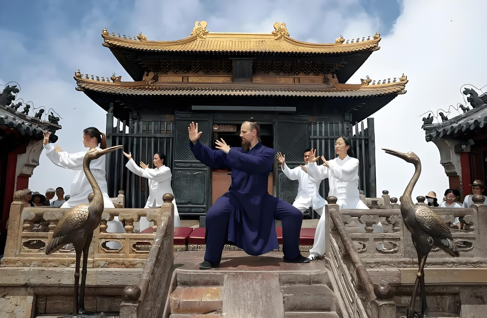
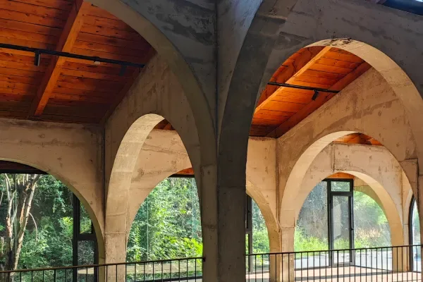
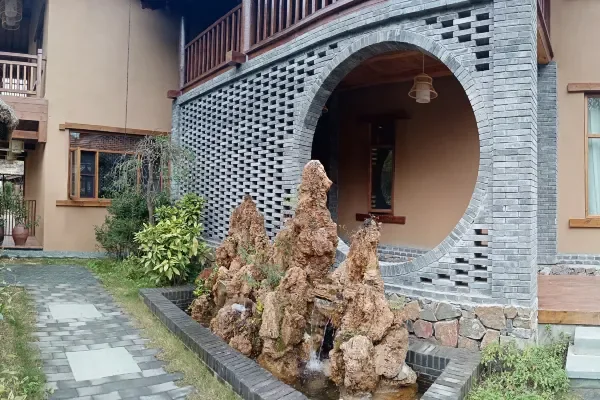
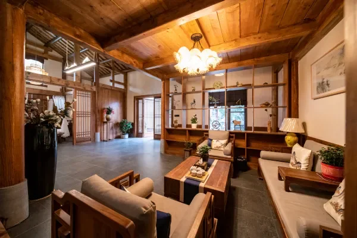
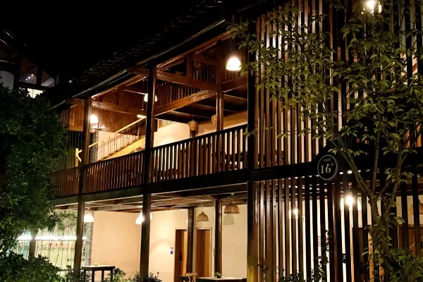
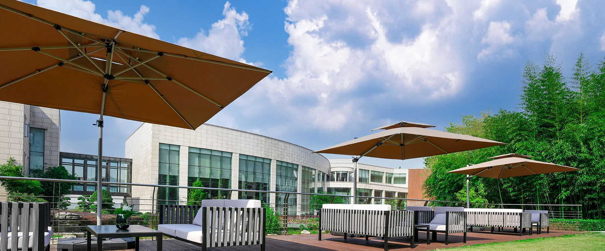
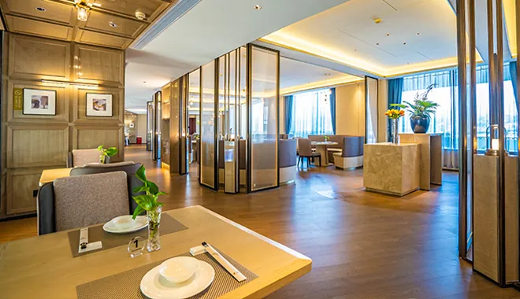

Planning
Journeys drawn to a particular brief.

Wudang Mountain
Wudang Mountain — Taihe, in an older name — rises in Danjiangkou, in the same Qinba range as Zhuxi. It has long been one of the principal mountains of Chinese Daoism, and the traditional birthplace of Wudang tai chi. In 1994 the ancient building complex was inscribed as a UNESCO World Heritage Site.
The mountain as we see it is largely a Ming work. In 1412 the Yongle emperor built here to the measure of an imperial palace, and made Wudang the official centre of Daoism in his reign, devoted to Zhenwu, the Perfected Warrior. The Golden Hall on Tianzhu Peak, a gilt-copper building that has stood for more than six centuries, is its emblem.
Purple Cloud Palace is still inhabited by Daoists; Nanyan Palace is built into the cliff, with the Dragon-head Incense running out over the drop. Seventy-two lesser peaks turn toward the Golden Summit.
Wudang 24 Solar Terms Retreats
Journeys drawn to a particular brief.
We will help you with Visa and packing checklist things.
Hotels, flights and trains, chosen for value as well as for fit.
We will be with you for the whole of the journey.
The year
Each programme follows the 2027 calendar, from the Start of Spring through to Major Cold in January 2028, which closes that winter. The English names on the left are the titles we give each retreat; the dates are a Friday to the Sunday of the following week, beginning on the Friday on or after the solar term itself, in Beijing time.
Nine days on the mountain
The first day is for arriving. The next three are for meeting the practice. The fifth is a day out, in a shape you choose. The last four deepen the same rhythm, a little more quietly.
The first day is for arriving: a walk under the red walls, a first meal, and an early night. The nearest airport and high-speed rail station are in Shiyan.
These three days begin with morning practice — tai chi taught by Wudang Daoist masters in the Sanfeng tradition, or the Sleeping Immortal lying practice — then follow a regular shape: a meal or a few hours out at midday, ink or a painted card in the afternoon, and a quieter evening. The aim is to let the body settle, and to make a first acquaintance with the practice.
The fundamentals and a first form, taught by Wudang Daoist masters in the Sanfeng tradition — a way of moving that is as much about attention as it is about exercise.
A distinctive Daoist practice of lying still, used here as a way to rest more deeply, and to sleep better.
A meal prepared for the season, at the house you have chosen, paired with a quieter hour of singing-bowl work.
Time among the trees and the water — gathering what is in season, a little archery, a meal by the lake, and, if you wish, a boat out to Taiji Island. This lunch is paid for after the meal; please choose it in advance.
A still hour with the brush, sitting with a character until the hand settles.
A small painted card, in the manner of a Chinese painting: a line first, then colour, taken slowly.
A first hour on the two books, spoken together. A second hour, if you wish, as a one-to-one conversation.
A suggested line through the mountain: Xuanyue Gate, Yuzhen Palace, Yuanhe Temple, Yuxu Palace, the Wudang Museum, Chongxu Nunnery, the Golden Flower Tree, Wulong Palace, Lingxu Temple. You may go on your own, or book a guide in advance.
The lying practice again, guided, at the end of the day.
An hour of sound, to let the day go.
Dinner continues the solar-term menu. The evening sessions, and the hour on the classics, can be live-streamed on request, so that someone who is not on the mountain can sit with the same hour.
Pick the day that suits your interests and your energy. Prices are on request, and are quoted for a car of up to three people; the first option uses the park’s own transport and does not need a private car.
The scenic-area shuttle goes straight to the Golden Summit. The view is of a sea of peaks.
A guide leads you along the mountain paths — gathering tea and herbs as you go, walking up to the Golden Summit.
The dam at the source of the South–North Water Transfer, with Jingle Palace, the Daoist college, the waterside road, and Canglang Sea along the way.
The turquoise country of Zhushan: the Yunge mine museum, and the market at Majiadu.
Travel to the International Lacquer Art Village for a hands-on introduction to the craft, and a quieter session that sets the work of lacquer beside turquoise.
The shape of the day is the same; the work is a little closer. These four days are for settling into the practice you have already begun, and for finishing what you have started — a passage from the Tao Te Ching, or the painted card — rather than for beginning again.
Tai chi again, taught by Wudang Daoist masters in the Sanfeng tradition, now towards a more continuous form and a quieter inward strength; or the Sleeping Immortal practice, towards a swifter settling. It is best to stay with the choice you made in the first three days of practice.
The seasonal table again, with a fuller session of singing bowls, paying attention to what is small in the body.
Back to a place you already know, without the need to see something new: a sit by the water, or an hour of your own.
No longer a single character: under guidance, a passage from the Tao Te Ching, or a quieter piece of your own, brought to a close.
The last of the colour, until the card is yours to take home.
A longer conversation on what the week has brought, and on how the two books might sit in ordinary life.
Return to a place you liked — Yuxu Palace, or Wulong Palace, or another — and simply sit for the afternoon, without hurrying on.
Sleeping Immortal practice or singing bowls again, to close the day and to sleep well. As before, the evening can be live-streamed if you would like someone at a distance to sit with the same hour.
Nine days in the hills is a conversation with the weather and the halls, and a reunion with yourself. The bells at the ends of the day, and the slower work of the body, are what we hope you take home — not as a prescription, but as a way of being a little more at ease in ordinary life. The mountain will still be there when you go.
Where you will Stay






Yuanhe Guan Village, Wudang Mountain
Yuanhe Meisu stands in Yuanhe Guan village, on Wudang Mountain in Danjiangkou, Shiyan, Hubei — about two kilometres from the entrance to this UNESCO World Heritage scenic area, in a quieter pocket of the hillside. The houses were remade from the old village, whose story runs back through the Ming and Qing, and the stay is still close to the Daoist way of living that belongs to this mountain.
There are eighty-two rooms of different kinds: courtyard houses with their own springs, rooms that look out over the hills, generous doubles and twins, and family suites — including a room for parents and children, a three-bedroom family apartment, and a duplex suite. Altogether it can take about two hundred guests. The grounds are planted throughout, and the seasons turn quietly around the courtyards.
On the 24 Solar Terms retreats you stay at Yuanhe Meisu or at Wudang Mountain Narada Resort, not at both. Breakfast is included.




Taiji Lake, Wudang Mountain
Wudang Mountain Narada Resort stands on Taiji Lake, at the northern foot of the mountain and next to the scenic area itself — a World Heritage landscape of halls and hills. The house is built among the slopes and the water, and is meant as a quieter Chinese elegance: a restorative stay, away from the noise of the city.
Rooms look out into the green of the hills. The table is seasonal and local, and the kitchen works with what the neighbouring farms are growing.
On the 24 Solar Terms retreats you stay at this house or at Yuanhe Meisu, not at both. Breakfast is included.
Yuanhe Village, Wudang Mountain
At the house, meals may be taken at 原乡本味餐厅: Chinese cooking, served à la carte, for breakfast, lunch and dinner, from 07:00 to 22:00. Breakfast is a Chinese set menu, from 07:30 to 09:30. A table can be reserved.
Practical
What the retreat includes, and how we work.
Make an enquiry
By filling up this form, you help us better understand your needs and wants in order to recommend an itinerary that matches you.